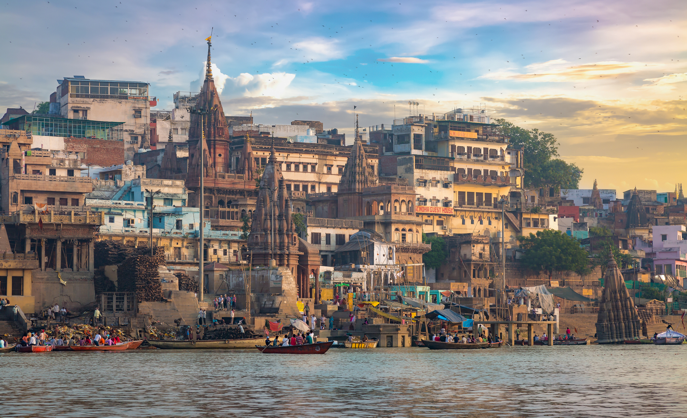
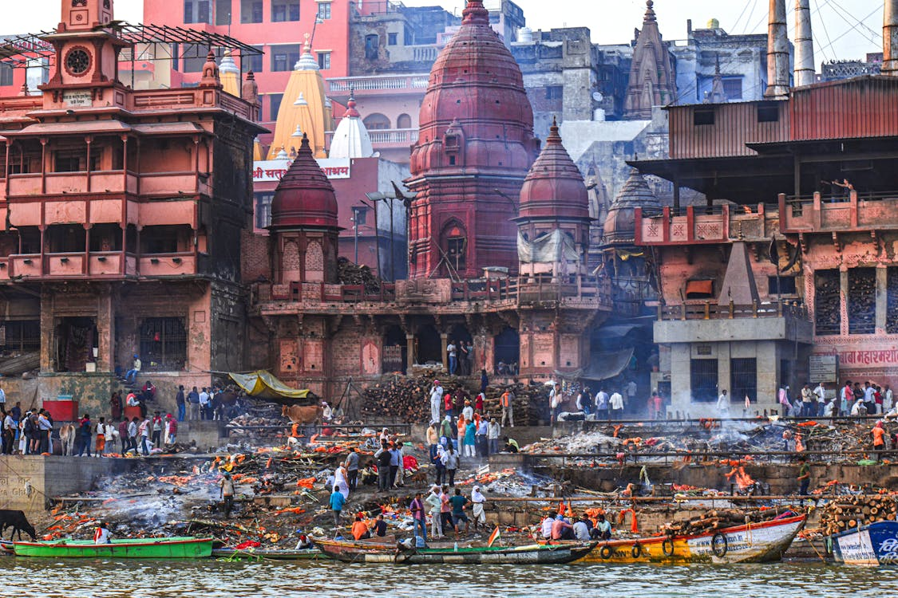
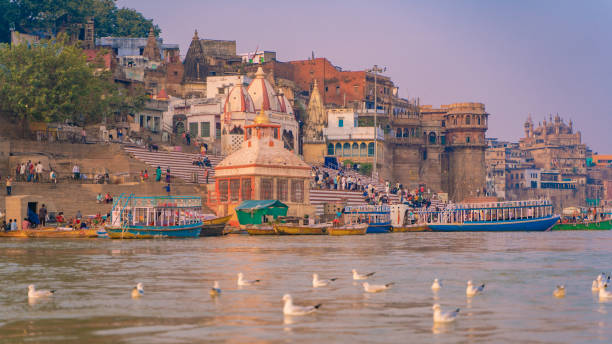
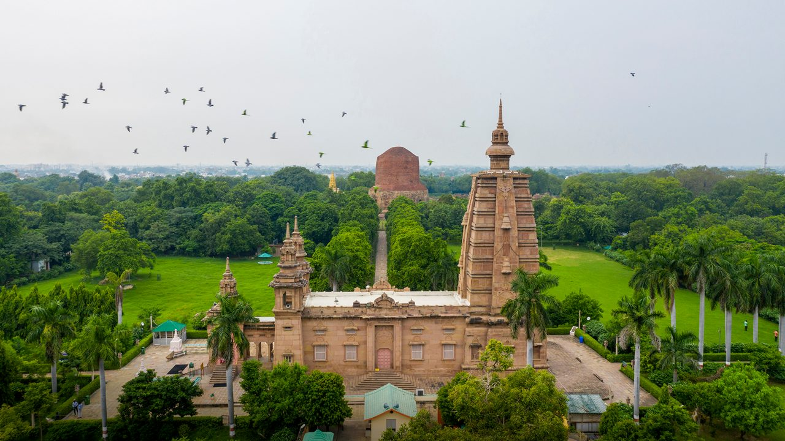
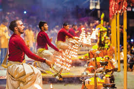
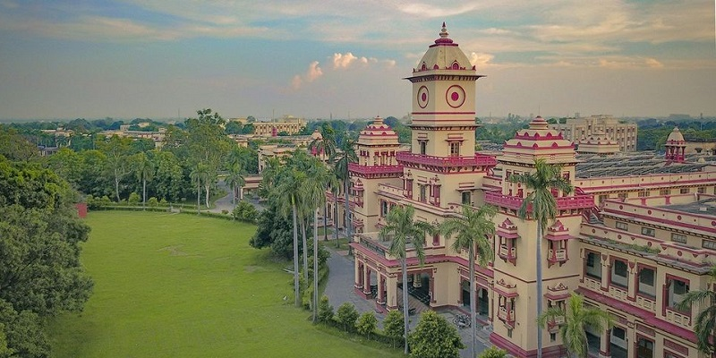
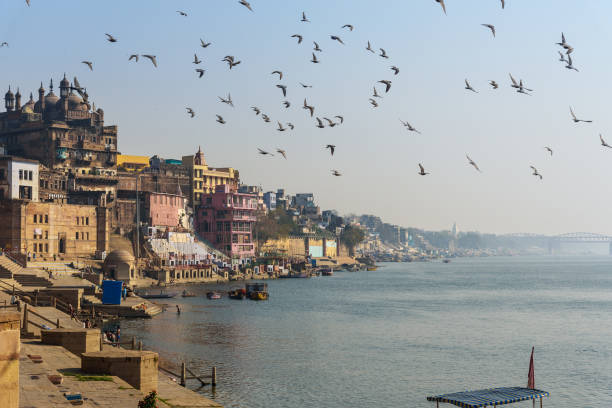

Uttar Pradesh
A Glimpse of the Entire Nation
Varanasi: Ancient, Spiritual, Serene

Varanasi, origianlly known as Kashi, is a very ancident and scared city of India, believed to be more than 3000 years old. According to mythology, it was founded by Lord Shiva and is situated on the banks of river Ganga between the rivers Varuna and Assi, hence it is also called Varanasi. During the Mughal peroid it came to be known as Varanasi, which became a popular name. In 1956, the official name of the city was again changed to Varanasi, although the name Kashi and Varanasi and still popular today.
Ancient Names:The most ancident name of the city is Kashi, which is considred to be the city of brightness or light.
Mythological Significance:According to religious beliefs, this is the city of Lord Shiva and a holy Place for his penance. It is situated on the banks of the river Ganga, between the Varuna and Assi rivers, from which it got the name Varanasi.
Name changes during the Mughal peroid:During the Mughal peroid, Muslim poets describe the city as "dipped in juice or sherbet", giving rise to the common names Banaras.
Selection of Varanasi:On 24 May 1956, the name of the city was changed to Varanasi.
Modern Identification:Varanasi is famous all over the world for its culture, Ghats, Shrikashi Vishwanath Temple and river Ganga.
In Short:Banaras(Kashi)is a city more than thousand years old which has come to be known as Varansi over time. Its history, religious Significance, and culture heritage give it a unique place.
Religious & Spiritual Sites:
Kashi Vishwanath Temple:A famous Hindu temple decidated to Lord Shiva, known for its Spiritual Significance. The original temple, called the Adi Vishveshwar Temple,was demolished by Mohammad of Ghor during his invasion of India. It is believed that Varanasi is the first Jyotirlinga to manifest itself. According to the legend, it was at this place that Shiva (the Hindu god of destruction) manifested as an infinite column of light (Jyotirlinga) in front of Brahma (the Hindu god of creation) and Vishnu (the Hindu god of preservation) when they had an argument about their supremacy.

Dashashwamedh Ghat:One of the oldest and most well-known riverfront areas where you can experience evening aarti rituals. Dashashwamedh Ghat is a main ghat in Varanasi located on the Ganges River in Uttar Pradesh, India. It is located close to Vishwanath Temple. There are two Hindu legends associated with the ghat: according to one, Brahma created it to welcome Shiva, and in another, Brahma performed 10 Ashwamegha Yajna, Dasa-Ashwamedha yajna. The present ghat was built by Peshwa Balaji Baji Rao in 1748. A few decades later, Ahilyabahi Holkar, the Queen of Indore, rebuilt the ghat in 1774.

Manikarnika Ghat:A significant and ancient ghat where many Spiritual rituals, including cremation, take place. The Manikarnika Ghat is one of the oldest ghats in Varanasi. It is mentioned in a Gupta inscription of 5th century.[4] It is revered in Hinduism. When Mata Sati (Adi Shakti) sacrificed her life and set her body ablaze after Raja Daksh Prajapati (one of the sons of Brahma) tried to humiliate Shiva in a Yagya practiced by Daksh, Shiva took her burning body to the Himalaya. On seeing the unending sorrow of Shiva, Vishnu sent the Divine chakra to cut the body into 51 parts, which then fell to earth. These are called "Ekyavan Shaktipeeth". Shiva established Shakti Peeth wherever Sati's body had fallen. Mata Sati's ear ornament fell at Manikarnika Ghat.

Assi Ghat:Another revered ghat that hosts morning rituals and is a popular starting point for a Ganga river experience. The Assi Ghat is the southernmost ghat in Varanasi. It is one of the biggest ghats in Varanasi. The Assi and Ganges rivers converge at Assi Ghat. To most visitors in Varanasi, it is known for being a place where long-term foreign students, researchers, and tourists live. Assi Ghat is one of the ghats often visited for recreation and during festivals. Most of the people visiting the ghat on usual days are students from the nearby Banaras Hindu University. The ghat accommodates about 22,500 people. During iconic Dev Deepawali festival, more than 600,000 tourists visit the ghat. Old people in group chat in the evening at Assi Ghat Hindus believe that it was at Assi Ghat that Tulsidas left for his heavenly abode. After the 2010 Varanasi bombing the city commissioned extra police to the Assi Ghat.

Sarnath:A sacred Buddhist site located near Varanasi, featuring stupas, gardens, and a museum, and is where the Buddha first taught the Dharma. Sarnath is where Gautama Buddha's sangha first convened, when he gave the first teaching to his original five disciples Kaundinya, Assaji, Bhaddiya, Vappa and Mahanama, known as The First Turning of the Wheel of Dharma. This teaching occurred circa 528 BCE when the Buddha was approximately 35 years of age. The buddha before Gautama Buddha is Kassapa Buddha, who was born in Sarnath to where he returned and joined his sangha of men and women in order to give his first teaching.

Ramnagar Fort:An 18th-century fort built in the Mughal architectural style, it houses a quirky museum with vintage items and a unique astronomical clock. The fort is at a scenic location on the eastern right bank of the Ganges River, opposite to the Varanasi Ghats. It is 14 kilometres (8.7 mi) from Varanasi and 2 kilometres (1.2 mi) from the Banaras Hindu University by the newly built Ramnagar bridge. With the bridge built it hardly takes 10 minutes to reach the fort from BHU. Boat ride to the fort from Dashashwamedh Ghat in Varanasi takes about an hour. A painted state barge with a twin emblems in the form of horses could be seen moored to the landing stage. There is a well laid out garden within the fort which forms the approach to the palace.

Ganga Aarti:The Ganga Aarti is a sacred evening ceremony on the Ganges River in Varanasi, India, where priests perform a fire ritual with lamps, incense, and chanting to honor the holy mother Ganges. Held nightly at locations like Dashashwamedh Ghat, the synchronized ritual involves ringing bells, blowing conch shells, and offering flowers to the river, creating a powerful spectacle of devotion and spirituality for large crowds of spectators. It begins after sunset, starting around 7 p.m. in the summer and 6 p.m. in the winter. The ritual is performed in dedication to Shiva, the goddess Ganga, the sun god Surya, the god of fire Agni, and the universe as a whole. The event is a major tourist attraction and a significant religious event that draws hundreds of people to the ghats every evening.

Banaras Hindu University (BHU):A large residential University campus known for its serence environment, tall trees, and the New Vishwanath Temple, which is one of the tallest temples in India. BHU is organised into six institutes, 14 faculties (streams) and about 140 departments. As of 2020, the total student enrolment at the university is 30,698 coming from 48 countries. It has over 65 hostels for resident students. Several of its faculties and institutes include Arts, Social Sciences, Commerce, Management Studies, Science, Performing Arts, Law, Agricultural Science, Medical Science, and Environment and Sustainable Development along with departments of Linguistics, Journalism & Mass Communication, among others. The university's engineering institute was designated as an Indian Institute of Technology in June 2012, and henceforth is Indian Institute of Technology (BHU). Centralised in 1916 through the Banaras Hindu University Act, Banaras Hindu University is India's first central university.

Panchganga Ghat:One of the older and more significant ghat in the city, representing a confluence of five scared rivers. The ghat is named for the belief that five sacred rivers meet here. While only the Ganga is visible, the other four are thought to merge here in a spiritual or hidden form. It is believed to be a place where Vaidant Ramanand, the guru of Kabir, taught. Saint-poet Tulsi Das is believed to have written the Vinay-Patrika at this ghat. The site of the modern Alamgir Mosque was originally the Bindu Madhava Temple, built by Maratha chieftain Beni Madhav Rao Scindia. The temple was destroyed during the Mughal invasion, and the mosque was constructed in its place. Devotees visit to bathe in the holy waters and seek blessings from the five river goddesses, whose idols are believed to be present. The ghat is also a site associated with the Sufi tradition, marking the initiation of the medieval saint Kabir.

Best time to visit Varanasi:
The best time to visit Varanasi is during the winter months, from October to March, due to the cool and pleasant weather, which is ideal for sightseeing and participating in rituals. The winter season offers comfortable temperatures ranging from approximately \(5\degree C\) to \(25\degree C\) and is less hot than the summer and monsoon periods. Summers (April-June) are extremely hot, while monsoons (July-September) are humid, making both seasons less comfortable for exploration.
How to visit Varanasi:
To visit Varanasi, you can fly to nearby airports like Gorakhpur, then takes Bus or Taxi to Varanasi. You can also travel by train to Varanasi station. Once you visit Varanasi,use local transport like E-rickshaws, Auto-rickshaws or rapido ride are affordable and readily available for moving around the cities as per your comfort. Many important sites and temples are within walking distances of each other, making it a viable way to explore the city.